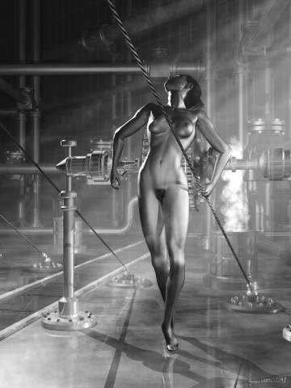

Gregor Hartmann
private arts
Gregor Hartmann
private arts
Since 1997 Gregor Hartmann has been working in black-and-white. He calls these images "private arts". They are notable for their nude or thinly-dressed human figures and the post-modern alien environment they inhabit. Hartmann was born and lives in Vienna. He has been working in computer graphics since 1988, including animations, and his work and short movies have been shown in various festivals and contests. He was recently awarded the "Biennale dell Arte Contemporanea", in Florence, Italy.
Not Relaxed
 |